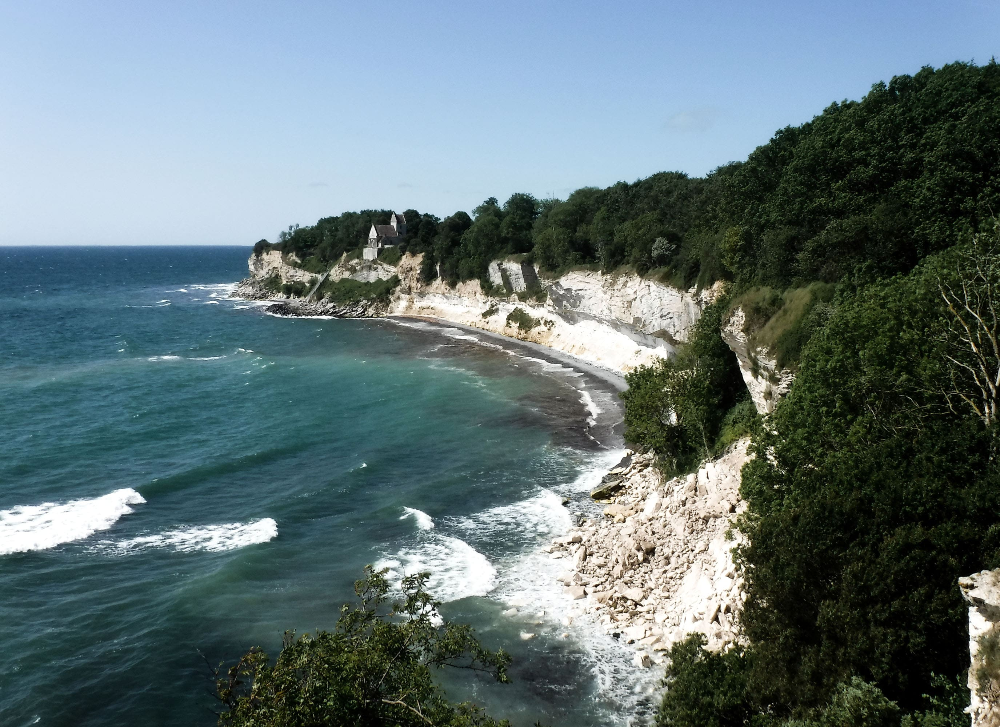
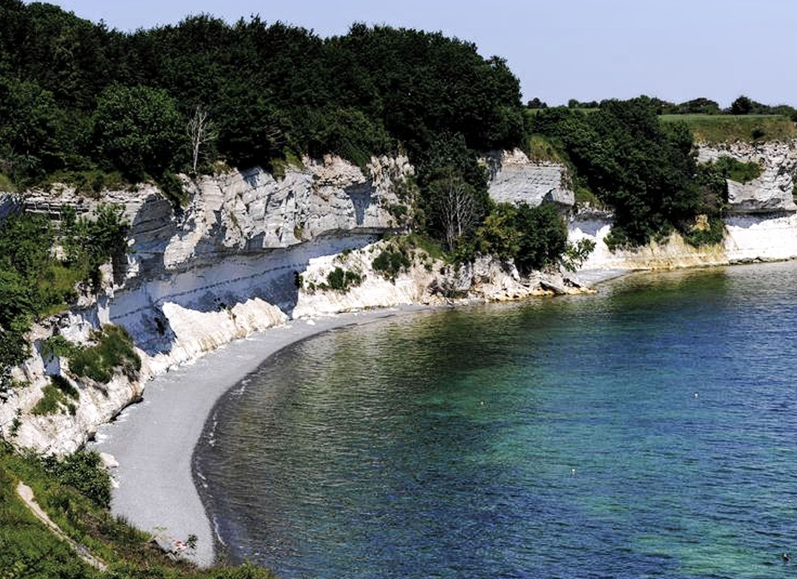

Stevns Klint

Stevns Klint er blevet optaget på UNESCO's liste over verdensarv, fordi et dramatisk kapitel i Jordens historie gemmer sig i klinten. Et ganske tyndt lag af Fiskeler fortæller historien om, hvordan dinosaurerne og halvdelen af alle dyrearter blev udslettet for 66 millioner år siden, da en asteroide ramte Jorden. Besøg Stevns Klint i Højerup, der er det bedste sted i verden at se det dramatiske lag.

Men Stevns Klints smukke natur rummer også et væld af andre historier og oplevelser. Gå langs klinten på en cirka 20 km lang sti, der forbinder Stevns Klints højdepunkter.
I samarbejde med Stevns Kommune og Verdensarv Stevns er der udarbejdet en folder til besøgende ved klinten.